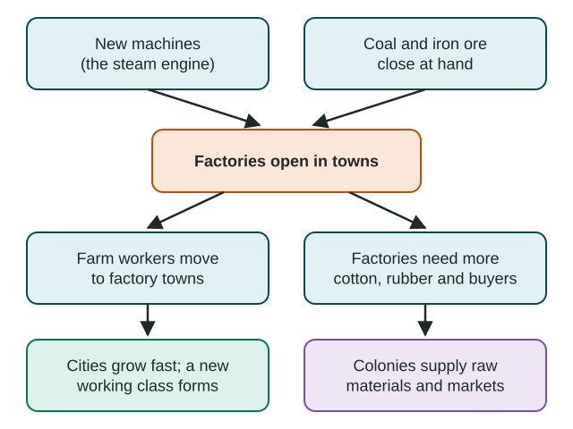
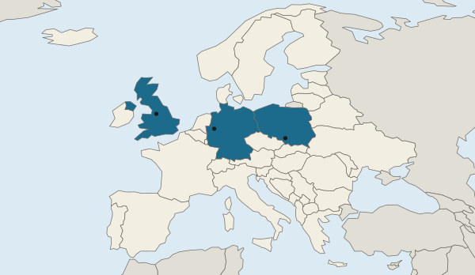

The Industrial Revolution
The Industrial Revolution began in Britain in the late 1700s, when new machines and steam power met coal and iron.
Part 1 · Hook
Why this matters
Part 2 · Prerequisite check
Quick check before you start
1. What did the Second Agricultural Revolution do to the number of people needed on farms?
- It lowered it, because new methods grew more food with fewer workers
- It raised it, because new crops needed more hands
- It left it the same
- It moved farmworkers into cities by law
Show the answer
New tools and methods grew more food with fewer workers, freeing people to move to towns.
- Correct: It lowered it, because new methods grew more food with fewer workers:
- It raised it, because new crops needed more hands:
- It left it the same:
- It moved farmworkers into cities by law:
2. What is colonialism?
- One country ruling another territory and its people
- Two countries trading as equals
- People moving from farms to cities
- A country splitting into smaller states
Show the answer
Colonialism is rule over another territory; industrial powers used colonies for raw materials and markets.
- Correct: One country ruling another territory and its people:
- Two countries trading as equals:
- People moving from farms to cities:
- A country splitting into smaller states:
3. People leaving the countryside to live in cities is called what?
- Rural-to-urban migration
- Step migration
- Transhumance
- Forced migration
Show the answer
Rural-to-urban migration is the move from the countryside to cities, a key effect of factory jobs.
- Correct: Rural-to-urban migration:
- Step migration:
- Transhumance:
- Forced migration:
Part 3 · See it
See it first

Part 4 · Step by step
How it works, step by step
- New machines and the steam engine meet coal and iron in Britainfactories can run anywhere there is coal, so they cluster in towns
- Factories in towns need many workers, and farms need fewerfarmworkers move to towns (rural-to-urban migration)
- Workers pour into towns faster than housing is builtcities such as Manchester grow fast and crowd up, and a working class forms
- Mills need cotton, rubber and buyersindustrial countries tighten control over colonies (colonialism and imperialism)
Part 5 · Key ideas
Key ideas
- Industrialization is the spread of factories and machine work to a place. It needs new technology and the resources to run it.
- The steam engine freed factories from rivers, so they clustered in towns near coal, workers and buyers.
- More food from new farm methods fed the towns and freed farmworkers, so cities grew and the population rose.
- Factories needed raw materials and markets, which fed colonialism and imperialism in Africa and Asia.
- Industry spread from Britain to Belgium, the Ruhr, the US Northeast and, after 1868, Japan: at different times, by different routes.
Part 6 · Misconception
A common mistake
The wrong idea: The Industrial Revolution was one quick event that happened everywhere at once.
What actually happens: It took more than a century and reached places at different times: Britain from the late 1700s, Germany's Ruhr in the mid-1800s, Japan after 1868. Name the place and the time.
Part 7 · Check yourself
Check yourself
Exam-style questions. Anything you miss goes into your review queue.
Map
Three early industrial regions of Europe

- Countries with a marked early industrial region of the 1800s. Each sits on a coalfield: A Manchester, B Ruhr, C Upper Silesia
1. The legend says each marked region sits on a coalfield. Why did early factories cluster in places like these?
- Coal fueled the steam engines
- Coalfields were where the best farmland was found
- Rulers kept factories away from the coast by law
- Each was a capital
Show the answer
Steam engines ran on coal, which was bulky and expensive to move by land in the 1800s, so factories located near the coalfields.
- Correct: Coal fueled the steam engines: Right: steam engines burned coal, and coal was heavy and costly to haul, so mills located on top of it.
- Coalfields were where the best farmland was found: Coal lies under many kinds of land; farmland was not what drew mills to these three regions.
- Rulers kept factories away from the coast by law: No such ban existed; Upper Silesia and the Ruhr are far inland.
- Each was a capital: Manchester, the Ruhr towns and Upper Silesia are not capitals. Their pull was coal, not government.
2. At what scale of analysis does this map show early industrial regions?
- Regional: places in several countries of Europe
- Local: one neighborhood inside one single city
- Global: the whole world shown at once on one map
- National: one country and its many provinces
Show the answer
The scale of analysis is the scale of the data shown: three places across several countries of Europe make a regional scale.
- Correct: Regional: places in several countries of Europe: Right: the data are three places across several European countries, so the scale is regional.
- Local: one neighborhood inside one single city: The marks are spread across three countries, not within one city.
- Global: the whole world shown at once on one map: Only Europe is shown, so the map works at a regional scale, not a global one.
- National: one country and its many provinces: Three countries are marked, so it is wider than one national scale.
3. Manchester, marked A on the map, grew from a market town into a large factory city in the early 1800s. Which explanation of that growth includes every link?
- Mills on the coalfield needed workers, so farmworkers moved in
- Manchester grew larger because it was an industrial place in England
- Farmworkers moved away from Manchester to farm land in colonies
- Its birth rate rose sharply after its mills shut down
Show the answer
An explain answer gives every link: mills on the coalfield needed labor, so rural workers moved to Manchester for factory wages, so the city grew.
- Correct: Mills on the coalfield needed workers, so farmworkers moved in: Right: a cause (mills on the coal), a link (the need for workers) and an effect (migration into the city).
- Manchester grew larger because it was an industrial place in England: This restates the idea without the link: why industry made the city grow is missing.
- Farmworkers moved away from Manchester to farm land in colonies: That would shrink the city, not grow it.
- Its birth rate rose sharply after its mills shut down: The mills did not close in this period, and the growth came mostly from people moving in.
4. Great Britain was the first place to industrialize, in the late 1700s. Which combination best explains why?
- New machines plus coal, iron and trade wealth
- The largest population of any country in the world then
- A law against farming that pushed people into towns
- A warm climate that suited factory work year-round
Show the answer
Technology (spinning machines, the steam engine) and resources (coal, iron ore, capital from trade) came together in Britain first.
- Correct: New machines plus coal, iron and trade wealth: Right: industrialization needs both new technology and the resources to run it, and Britain had both.
- The largest population of any country in the world then: Britain was not the most populous country; China and India had far more people.
- A law against farming that pushed people into towns: There was no ban; new farm methods simply needed fewer workers.
- A warm climate that suited factory work year-round: Climate was not the cause; technology and resources were.
5. How did the steam engine change where factories could be built?
- Mills could leave rivers and cluster in towns near coal
- Mills moved next to waterfalls so the engines stayed cool
- Factories were allowed in capital cities and nowhere else
- Factories spread evenly over the countryside
Show the answer
Before steam, a water wheel needed a fast stream. Steam engines ran on coal anywhere, so factories moved to towns near coal, workers and buyers.
- Correct: Mills could leave rivers and cluster in towns near coal: Right: water wheels tied mills to streams; steam power let them move to towns.
- Mills moved next to waterfalls so the engines stayed cool: This reverses the change: steam freed mills from rivers.
- Factories were allowed in capital cities and nowhere else: Steam power let factories locate in many towns, near coal and workers.
- Factories spread evenly over the countryside: They clustered in towns and on coalfields rather than spreading out.
6. An invented mill town in Country A had 20,000 people in 1800 and 140,000 people in 1850. By what percent did its population grow? (Invented data for practice.)
Type a number (%). No calculator needed: work it out by hand, as on the exam.
Show the answer
Percent change is (new minus old) divided by old, times 100:
- Answer: 600 %
Part 8 · Summary
Summary
Part 9 · Up next
What comes next
Part 10 · Connections